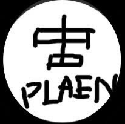
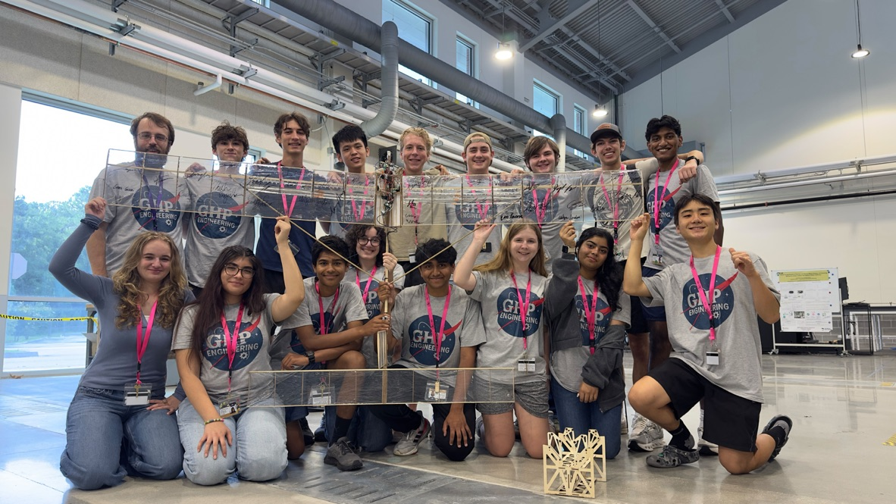
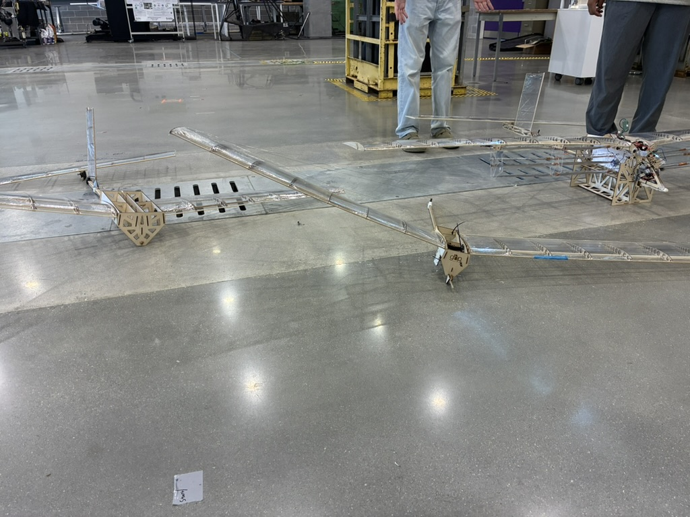

Project
An ionic thruster airplane at Georgia Governor's Honors Program.

GHP — Georgia Governor's Honors Program is a summer program for top students in Georgia. I was in the mechanical & aerospace engineering track, led by Professor Craig Worley — a Caltech grad who works at Blue Origin.
For a month, we learned and built. One week learning, three weeks implementing. It was intense, inspiring, and honestly a little terrifying.
Our team designed and built an ionic thruster airplane — inspired by MIT's research. The concept: push thousands of volts through laser-cut wood and thin film to create ionic wind that generates thrust. No propellers, no moving parts — just pure physics.
I handled ALL of the electronics — the voltage rectifier, stepping voltage up to the levels we needed, and making sure the whole system was safe (or at least survivable). We went through 3 versions of the DMS (Dead Man Switch) over the course of the project.
Learning phase — deep dive into aerospace engineering, ionic propulsion theory, and electronics fundamentals.
Implementation — designing, laser cutting, wiring, testing, breaking, rebuilding. Three iterations of the Dead Man Switch. Three versions of the airplane.
Presented the completed ionic thruster airplane to the GHP community.

